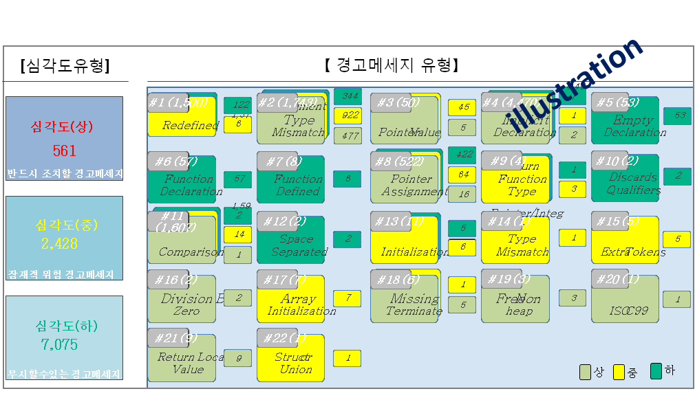
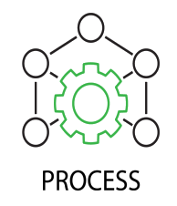
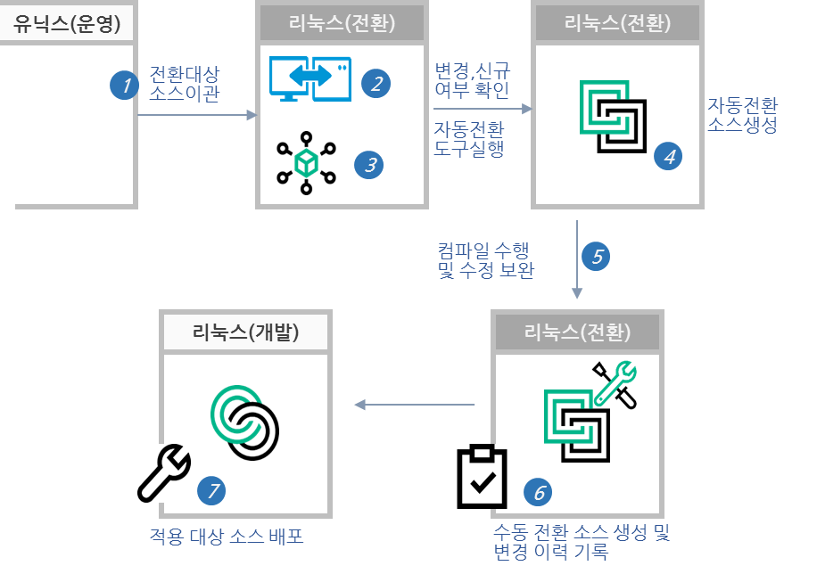
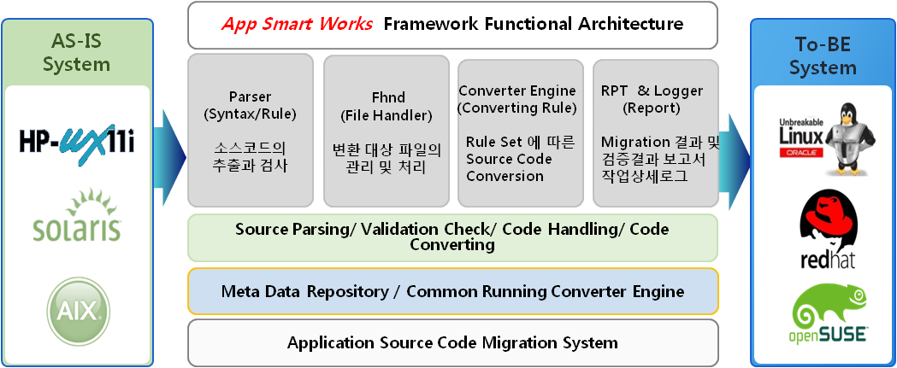
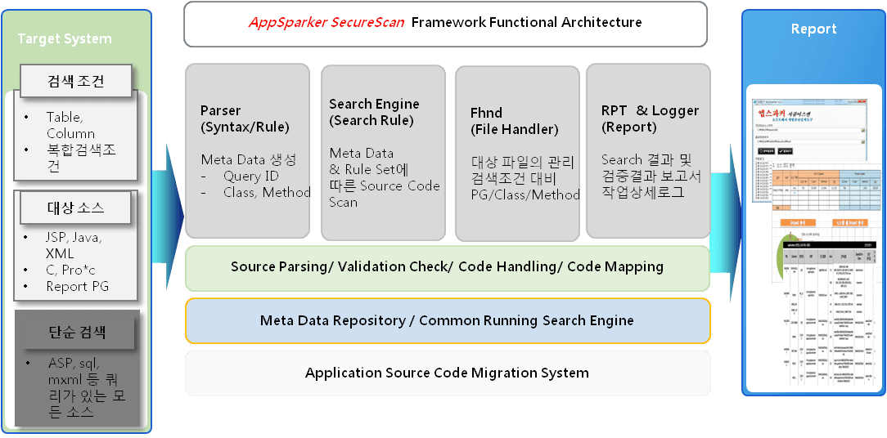

사전 Assessment 작업으로 작업 대상을 추출하고 유형별 Guideline을
정의하여 작업의 일관성 확보하고 사전 유형별 오류 도출로 마이그레이션
작업의 효율 높이고 리스크를 최소화 합니다.
리눅스 전환 오류
|
동일한 어플리케이션이 리눅스 전환으로 인해 유닉스 환경에서와 상이한 결과 값을 갖는 것
|
컴파일 오류
(Compilation)
|
리눅스 환경 내 컴파일 과정에서 유닉스 환경에서와 상이하게 발생하는 에러 또는 경고
|
런타임 오류
(Testing)
|
리눅스 환경 내 컴파일 오류(경고 포함) 수정 완료 후 실행 환경에서
동일한 어플리케이션이 유닉스 환경과 다른 결과값을 발생 시키는 것
|


어플리케이션 마이그레이션
(Application Migration)
다양한 운영환경에서 U2L 프로젝트 수행을 통한 경험과 노하우가
결집된 마이그레이션 방법론과 자동화 솔루션를 활용하여 이슈에 대한 유연한 대응과
소요 시간 및 투입 인력 절감 등 높은 효율성과 안정성 보장합니다.
마이그레이션 전환 절차

어플리케이션 전환 솔루션
(AppSmart Works)
앱스마트워커(AppSmartWorker)는 마이그레이션 경험과 노하우를 결집하여
개발한 마이그레이션 자동화 솔루션 입니다. Unix to Linux, H/W Vendor Win-Back 으로
인한 마이그레이션에 유연하게 대응 합니다.

앱스마트워크 장점
| 수작업 Migration시 |
- 개발자/설계자의 수작업 확인 및 담당자별 검증
-소스 파일, 데이터 베이스, 설계 문서 등
- 실제 시스템과 산출물 사이의 차이 발생
- 모든 개발소스 검증을 수작업으로 수행함에 따른 시간 지연 및 누락 발생
|
| 앱스마트워커 사용 Migration시 |
- 프로그램 소스들의 IP정보를 자동으로 수집 / 식별하여 정의된 신규 IP정보로
변경 후 관련 내역을 산출물로 제공
- 자동화에 따른 신속성 및 정확성 제고
- 산출물 자동 생성을 통해 향후 시스템 개발을 위한 참고자료로 활용
|
어플리케이션 진단 솔루션
(AppSparker)
앱스파커 (AppSparker : Application Security & Vulnerability Scanner)는
어플리케이션 소스코드의 연관 검색 및 취약점 진단을 위한 Security Assessment tool 입니다.
[ 구성 및 용도 ]
- SecureScan (개인정보 노출 취약 소스 진단 및 연관 검색)
- SecureCoding (시큐어코딩 취약 소스 진단 및 검색)

상세기능 설명
|
개인정보 노출 취약 소스 진단 및 검색(SecureScan)
|
- 개인정보 항목에 대한 영향도 분석
- 대상 현황 및 항목별 어플리케이션 현황
- 테이블/칼럼 항목별 상세 연관 검색(프로그램 라인 , 소스코드, 연관검색값)
|
|
시큐어코딩 취약 소스 진단 및 검색(SecureCoding)
|
- 보안취약 목록 조회 (Redirect, SQL-Injection, XSS 등)
- 해당 프로그램 Directory, 파일명 조회
- 해당 취약 대상 프로그램 해당 라인 조회 및 소스코드 연계
- 해당 취약점 준수 가이드 조회
|